Advanced function block dynamos
The Advanced function block dynamo sets (frsAdvFunctions_FB and frsAdvFunctions_FB_Theme) contain dynamos to open faceplates for the advanced function blocks. Some of the function blocks have multiple dynamos from which to choose. The dynamos are textual in nature and are designed for use on a picture depicting a single interlock (one or more modules that include advanced functions, with common final elements).
The frsAdvFunctions_FB_Theme dynamo set is themed to a color palette (Silver) to help you coordinate the use of colors on your graphic. Also, the frsAdvFunctions_FB_Theme dynamo set has slightly different behavior from the frsSIS dynamo set, differences are documented for each dynamo, below.
These dynamos can only be used with the Advanced Functions function blocks in non-SIS modules. The dynamos are not for use with the SIS advanced function blocks.
In the configure mode of DeltaV Operate, you can drag any of these dynamos onto a process graphic to build the display. After you have added function block dynamo to a picture, you cannot modify it. If you need to change a dynamo you must delete the existing instance and add a new one.
The frsAdvFunctions_FB and frsAdvFunctions_FB_Theme Dynamo Sets
The frsAdvFunctions dynamo sets are in the Dynamo Sets folder in DeltaV Operate configure mode. The two frsAdvFunctions dynamo sets each contain the following dynamos:
|
Dynamo |
Description |
|---|---|
|
Controller_AVTR_1Input_ |
Used for a 1oo1 analog voter (AVTR) function block. |
|
Controller_AVTR_2Input_ |
Used for a 1oo2 or 2oo2 analog voter (AVTR) function block. |
|
Controller_AVTR_3Input_ |
Used for a 1oo3 or 2oo3 analog voter (AVTR) function block. |
|
Controller_AVTR_InputX_ |
An input-only dynamo that can be added to the Controller_AVTR_3Input_ dynamo for voting arrangements with more than three inputs. For example, for a 6oo8 voter, add five copies of the Controller_AVTR_InputX_ dynamo to one Controller_AVTR_3Input_ dynamo, for a total of eight inputs. |
|
Controller_CEM_Effect_ |
Used for a Cause & Effect Matrix (CEM) function block. Can be used multiple times when the CEM block has more than one effect. |
|
Controller_DVTR1_Input_ |
Used for a 1oo1 discrete voter (DVTR) function block. |
|
Controller_DVTR2_Input_ |
Used for a 1oo2 or 2oo2 discrete voter (DVTR) function block. |
|
Controller_DVTR3_Input_ |
Used for a 1oo3 or 2oo3 discrete voter (DVTR) function block. |
|
Controller_DVTR_InputX_ |
An input-only dynamo that can be added to the Controller_DVTR_3Input_ dynamo for voting arrangements with more than three inputs. For example, for a 6oo8 voter, add five copies of the Controller_DVTR_InputX_ dynamo to one Controller_DVTR_3Input_ dynamo, for a total of eight inputs. |
|
Controller_STD_ |
Used for a State Transition Diagram (STD) function block. |
|
Controller_SEQ_ |
Used for a Step Sequencer (SEQ) function block. |
|
Any_Advanced_Function_Block |
Used for any Advanced function block, this simple dynamo can call up a custom faceplate for any advanced function block, primitive or composite. |
Dynamo Properties Dialog
When a function block dynamo is pasted onto a process graphic, a Dynamo Properties dialog opens. The dialog has a field for identifying the name of the function block to be associated with the dynamo, as well as a field for identifying the associated faceplate. The Dynamo Properties dialog for some dynamos include additional fields.
AVTR Dynamo
The frsAdvFunctions dynamo sets each contain four dynamos for the AVTR function block. The common voting arrangements (1oo2, 2oo3, 1oo1, 2oo2, and 1oo3) call for an AVTR block with one, two, or three input parameters. For these common cases, the user chooses a dynamo based on the following:
Controller_AVTR_1Input_ for a 1oo1 voter
Controller_AVTR_2Input_ for a 1oo2 or 2oo2 voter
Controller_AVTR_3Input_ for a 1oo3 or 2oo3 voter
The one- and two-input AVTR dynamos are similar but have one or two fewer rows than the three-input dynamo. When you add one of these dynamos to a picture, the Dynamo Properties dialog prompts you to enter the path to the function block. If you prefer to use a custom faceplate rather than the default faceplate, enter its name in the Faceplate display name field. The Dynamo Properties dialog is shown below:
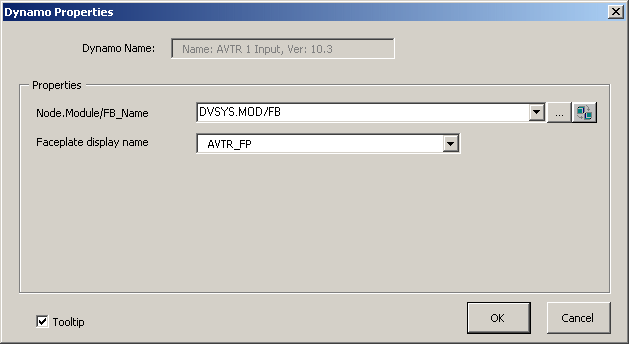
The Controller_AVTR_3Input_ dynamo from the frsAdvFunctions_FB_Theme_ dynamo set is shown below as it appears in Configure mode. (The descriptions, however, are for the behavior in Run mode.) The descriptions of the elements of the Controller_AVTR_2Input and Controller_AVTR_1Input_ dynamos are the same.
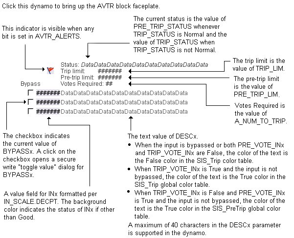
The AVTR input dynamos from the frsAdvFunctions_FB dynamo set are the same as the _Theme versions except as follows:

For voting arrangements with more than three inputs, one Controller_AVTR_3Input_ dynamo is used, plus a Controller_AVTR_InputX dynamo for each additional input needed. The Controller_AVTR_InputX dynamo is shown below:
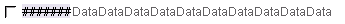
Thus, for a 6oo8 voter, you would drag-and-drop one Controller_AVTR_3Input_ dynamo and then drag-and-drop the Controller_AVTR_InputX dynamo five times, positioning each beneath the existing input lines.
DVTR Dynamo
The frsAdvFunctions dynamo sets each contains four dynamos for the DVTR function block. The common voting arrangements (1oo2, 2oo3, 1oo1, 2oo2, and 1oo3) call for an DVTR block with one, two, or three input parameters. For these common cases, choose a dynamo based on the following:
Controller_DVTR_1Input_ for a 1oo1 voter
Controller_DVTR_2Input_ for a 1oo2 or 2oo2 voter
Controller_DVTR_3Input_ for a 1oo3 or 2oo3 voter
The one- and two-input DVTR dynamos are similar but have one or two fewer rows than the three-input dynamo. When any of these dynamos is initially dropped on a picture, the Dynamo Properties dialog prompts the user to enter the path to the function block. Users who prefer a custom faceplate can enter the name of the faceplate on the Dynamo Properties dialog box. The Dynamo Properties dialog is shown below:
The Controller_DVTR_3Input_ dynamo from the frsAdvFunctions_FB_Theme_ dynamo set is shown below as it appears in Configure mode. (The descriptions, however, are for the behavior in Run mode.) The descriptions of the elements of the Controller_DVTR_2Input and Controller_DVTR_1Input_ dynamos are the same.

The DVTR input dynamos from the frsAdvFunctions_FB dynamo set are the same as the _Theme versions except as follows:
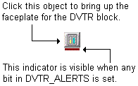
For voting arrangements with more than three inputs, one Controller_DVTR_3Input_ dynamo is used, plus a Controller_DVTR_InputX dynamo for each additional input needed. The DVTR_InputX dynamo is shown below:
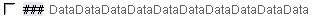
Thus, for a 6oo8 voter, you would drag-and-drop one Controller_DVTR_3Input_ dynamo and then drag-and-drop the Controller_DVTR_InputX dynamo five times, positioning each beneath the existing input lines.
CEM_Effect Dynamo
The CEM function block has a single dynamo which is used multiple times for a given CEM function block when the block has more than one Effect. The parameters in the dynamo are associated with a single Effect of the block. When you add this dynamo to a picture, the Dynamo Properties dialog prompts you to enter both the path to the CEM block and the Effect number. If you prefer to use a custom faceplate rather than the default faceplate, enter its name in the Faceplate display name field. The Dynamo Properties dialog is shown below:
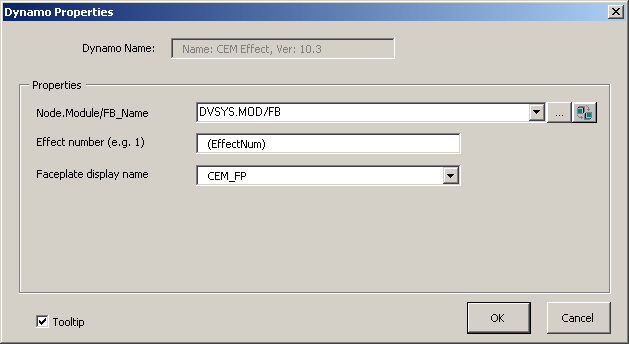
The Controller_CEM_Effect_ dynamo from the frsAdvFunctions_FB_Theme_ dynamo set is shown below as it appears in Configure mode. (The descriptions, however, are for the behavior in Run mode.)
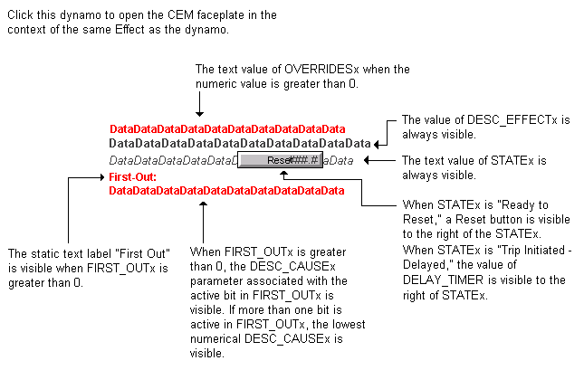
The CEM_Effect_ dynamo from the frsAdvFunctions_FB dynamo set is the same as the _Theme version except as follows:
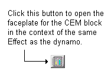
STD Dynamo
The STD function block has a single dynamo. When you add this dynamo to a picture, the Dynamo Properties dialog prompts you to enter the path to the STD block. If you prefer to use a custom faceplate rather than the default faceplate, enter its name in the Faceplate display name field. The Dynamo Properties dialog is shown below:
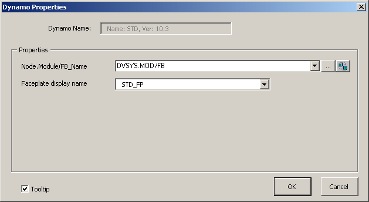
The Controller_ STD_ dynamo from the frsAdvFunctions_FB_Theme_ dynamo set is shown below as it appears in Configure mode. (The descriptions, however, are for the behavior in Run mode.)
The STD_ dynamo from the frsAdvFunctions_FB dynamo set is the same as the _Theme version except as follows:
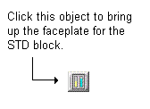
SEQ Dynamo
The SEQ function block has a single dynamo similar to the STD function block dynamo. When you add this dynamo to a picture, the Dynamo Properties dialog prompts you to enter the path to the SEQ block. If you prefer to use a custom faceplate rather than the default faceplate, enter its name in the Faceplate display name field. The Dynamo Properties dialog is shown below:
The Controller_SEQ_ dynamo from the frsAdvFunctions_FB_Theme_ dynamo set is shown below as it appears in Configure mode. (The descriptions, however, are for the behavior in Run mode.)
The SEQ_ dynamo from the frsAdvFunctions_FB dynamo set is the same as the _Theme version except as follows:
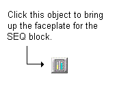
Any_Advanced_Function_Block Dynamo
This dynamo is used to open a custom faceplate for any advanced function block. You create the faceplate from the Iafb template. The Any_Advanced_Function_Block dynamo consists of an "Open Faceplate" button. When you add this dynamo to a picture, the Dynamo Properties dialog prompts you to enter the path to the block and the name of the custom faceplate. The Dynamo Properties dialog is shown below:
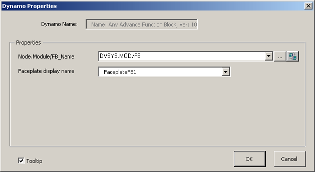
The Any_Advanced_Function_Block dynamo from the frsAdvFunctions_FB_Theme_ dynamo set is shown below as it appears in Configure mode. (The description, however, is for the behavior in Run mode.)
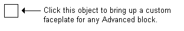
The Any_Advanced_Function_Block dynamo from the frsAdvFunctions_FB dynamo set is the same as the _Theme version except as follows:
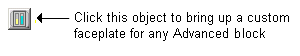